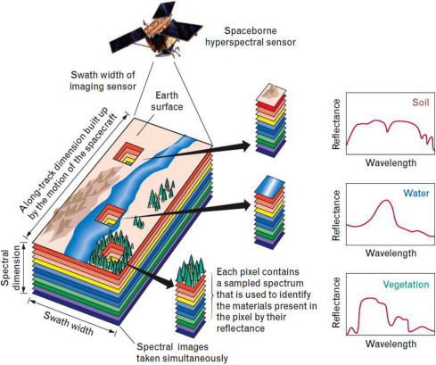

The rough definition of hyperspectral unmixing is that you have this hyperspectral image such that each pixel of this image is actually a combination of multiple “spectra” or spectral signatures, then basically you are tasked to unmix or untangle these spectra to identify the components or endmembers that make up the image, and their respective abundance. The endmembers are the components of each pixel and the abundance represents the fraction of each endmember in a pixel. In the image below, we see how hyperspectral unmixing works.

Figure 1: Hyperspectral unmixing concept in the remote sensing applicative context ((Dobigeon et al. 2016))
So in general, there are three steps in hyperspectral unmixing:
Endmember selection
Abundance estimation
Error minimization
Principal Component Analysis
For example, if we have this signal on the right, it is actually composed multiple signals of different forms. And we can perform principal component analysis to identify the signals that form it. We can also set a certain threshold such that we only choose as actual data the first \(n\) signals that represent 95% of the data. All signals after the first \(n\) signals will now be considered as noise.
Pitfall of using PCA only: Endmembers cannot be estimated completely just by using PCA. Reason for this is that in real images, the spectral data is nonlinear in nature.
From what I understood, you can identify which pixels of an image is “pure”. So for example, in an image, a pixel that only contain a cloud particle can be thought of as a “pure cloud pixel”. The existence of these pure pixels and a pure pixel index scores is important in a sense that only pixels whose PPI scores under a certain threshold are considered as endmembers.
This algorithm is one of the endmember extraction algorithm made that is still very popular up to this day.
N-FINDR Algorithm
For this algorithm, we reduce the dimensionality of the data using princpical component analysis. The number of endmembers is equal to the number of principal components in this algorithm. This algorithm is an iterative approach where the volume of a simplex formed by endmembers are maximized.
The essence of this algorithm is that two spectral bands are separated such that these two bands are as orthogonal to each other. If this is the case, that means one band will not share its information with another band. A requirement for this to work is that the number of spectral bands should be less than the target signature of interest.
Vertex Component Analysis
Pitfall/s: Realistically speaking, pure pixels dont exist. This is why we have algorithms that assumes the absence of pure pixels.
Endmember Extraction Methods (without pure pixels)
For this part, I’m just going to copy what the ParTI website said because I have understood that well and I think they were able to summarize and discuss everything in this part ((N/A 2022)). Other discussions are summarized from multiple papers and online articles I have read trying to understand each algorithms.
When there are no pure pixels algorithms used are going to be minimum volume-based but with different approaches.
SISAL (Simple Identification via variable Splitting and augmented Lagrangian)
Minimizes the volume of the simplex that encapsulates the data. It is resilient to noise and outliers - data points can end outside of the simplex. Usually archetype are located outside the data.
Basically, SISAL is useful in applications where there is a required constrained optimization. From the name itself, SISAL splits the unmixing process into two parts: a variable the represents the abundance of the endmembers in each pixel and a variable that helps hold constraints (non-negative abundance or sum-to-one). Now for the second part of the name, SISAL constructs an augmented Lagragian such that it applies a penalty that is based on the optimization algorithm. This will then be used to guide the optimization process. The algorithm will then iterate based on an error criterion or a set number of iterations. In each iteration, the abundance of each endmember will be calculated and updated based on the penalty and constraints given.
Minimizes the volume of the simplex that encapsulates the data. It is not resilient to noise and outliers - data points will all be inside the simplex.
SDVMM (Successive Decoupled Volume Max-Min)
data points are selected as archetypes, maximizing the variance of the data encapsulated within the resulting simplex. By Selecting tolerance radius around the points selected as archetypes, one can expand the simplex. In general, the archetypes are located within the data.
PCHA (Principal Convex Hull Analysis)
archetypes are found within the convex hull of the data, maximizing the data encapsulated within the resulting simplex. By selecting a tolerance radius around the points selected as archetypes, one can expand the simplex. In general, the archetypes are located within the data.
For large datasets of thousands data points, the three minimal bounding simplex algorithms (SISAL, MVSA and MVES) give very similar results. We found that the SISAL algorithm performs best since it takes good care of outliers in the dataset and gives the tightest simplex enclosing most of the data points. It is then also natural to use SISAL for calculation of the simplex statistical significance.
However, when the number of data points is on the order of a hundred or less, the SISAL algorithm might ignore important points when calculating the enclosing simplex. This is most relevant when calculating the statistical significance of the simplex. In such cases we used the MVSA algorithm.
Endmembers versus archetypes.
Okay so here, I got confused when I was reading the slides and other papers (Cricri’s SPP paper about voting patterns). So I did more research about the difference of endmembers and archetypes. From what I read, endmembers are these materials in the hyperspectral image, trees, rocks, clouds, etc. These endmembers now have a spectra which we call the endmember signature. Each pixel in our image is then represented by a linear combination of these endmembers with their respective abundance values.
Archetypes, on the other hand, are the spectral signatures of endmembers. That means they can be a combination of multiple endmembers. For example, one archetype can represent a group of trees. Archetypes are more useful to represent more complex materials with different spectral variatons.
Abundance Estimation and Error Minimization
After identifying the endmembers of our image, next thing to do is to estimate the fraction of endmembers in each pixel, quantified by abundance. One of the easiest ways to estimate abundance is by least squares. When calculating the abundance, the sum-to-one and non-negative constraints should be considered when calculating the least squares. Now, the process in estimating abundance is iterative such that the reconstruction error (obtained using the endmembers and abundance estimated) is minimized when compared to the original hyperspectral image.
Applications of Hyperspectral Unmixing
One of the cool things that we can use hyperspectral unmixing for is to discover voting patterns of people using an election dataset (Castro and Lim 2020). In the paper, they were able to identify the archetypes in an election dataset: that is the voting distribution of people. They found recurring archetypes across different election periods. With this paper, we see that hyperspectral unmixing can also be used to different types of data as long as these data contain some sort of “components” that can be unmixed.
References
Castro, Crizzia Mielle Mariano de, and May Tan Lim. 2020. “Extracting Voting Patterns Across Three Philippine Senate Elections Using Hyperspectral Unmixing.” In Proceedings of the Samahang Pisika Ng Pilipinas, 38:SPP-2020-2A-06. https://proceedings.spp-online.org/article/view/SPP-2020-2A-06.
Chang, Chein-I. 2005. “Orthogonal Subspace Projection (OSP) Revisited: A Comprehensive Study and Analysis.”IEEE Transactions on Geoscience and Remote Sensing 43 (3): 502–18. https://doi.org/10.1109/tgrs.2004.839543.
Dobigeon, N., Y. Altmann, N. Brun, and S. Moussaoui. 2016. “Chapter 6 - Linear and Nonlinear Unmixing in Hyperspectral Imaging.” In Resolving Spectral Mixtures, edited by Cyril Ruckebusch, 30:185–224. Data Handling in Science and Technology. Elsevier. https://doi.org/https://doi.org/10.1016/B978-0-444-63638-6.00006-1.
Heylen, Rob, and Paul Scheunders. 2013. “Multi-Dimensional Pixel Purity Index.” In 2013 5th Workshop on Hyperspectral Image and Signal Processing: Evolution in Remote Sensing (WHISPERS), 1–4. https://doi.org/10.1109/WHISPERS.2013.8080725.